01
Crear e integrar
El generador muestra los archivos y la integración al build antes de escribirlos. El ejemplo orbit_lab capturado muestra esa vista previa; no se creó una app para las capturas.
UFSM · Engenharia Aeroespacial · 2025–2026
Del primer comando a comprender la misión.
Un entorno educativo que reúne NASA cFS, código, comandos y telemetría en un recorrido de aprendizaje.
Explora el proyecto¿Por qué desarrollarlo?
Recibir la primera telemetría puede exigir configurar la compilación, crear una aplicación, encontrar identificadores de mensajes e interpretar eventos. El proyecto estudia cuánto de esa preparación se puede automatizar manteniendo el contacto con software de vuelo real.
Dentro del sistema
Estas capturas muestran la aplicación ejecutada localmente. Explora el entorno, cFS nativo, comandos, eventos y telemetría para conectar arquitectura e interfaz real.
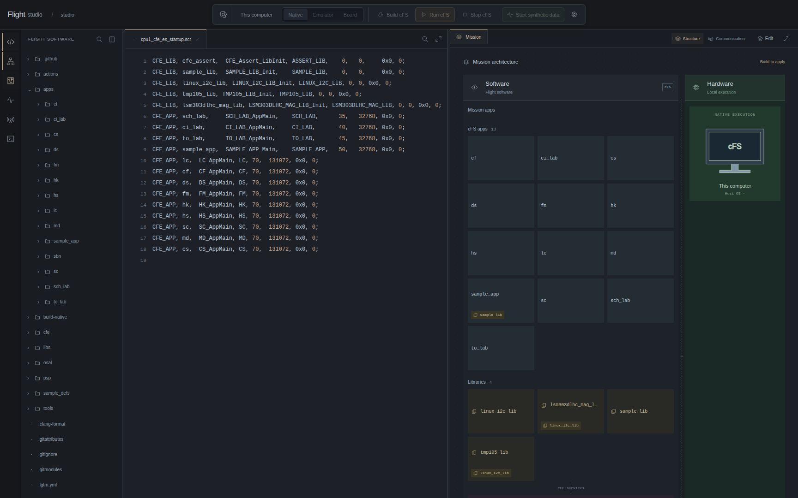
La interfaz real en ejecución local. El archivo de inicio CPU1 aparece junto a las aplicaciones cFS y las bibliotecas, con el destino Native seleccionado.
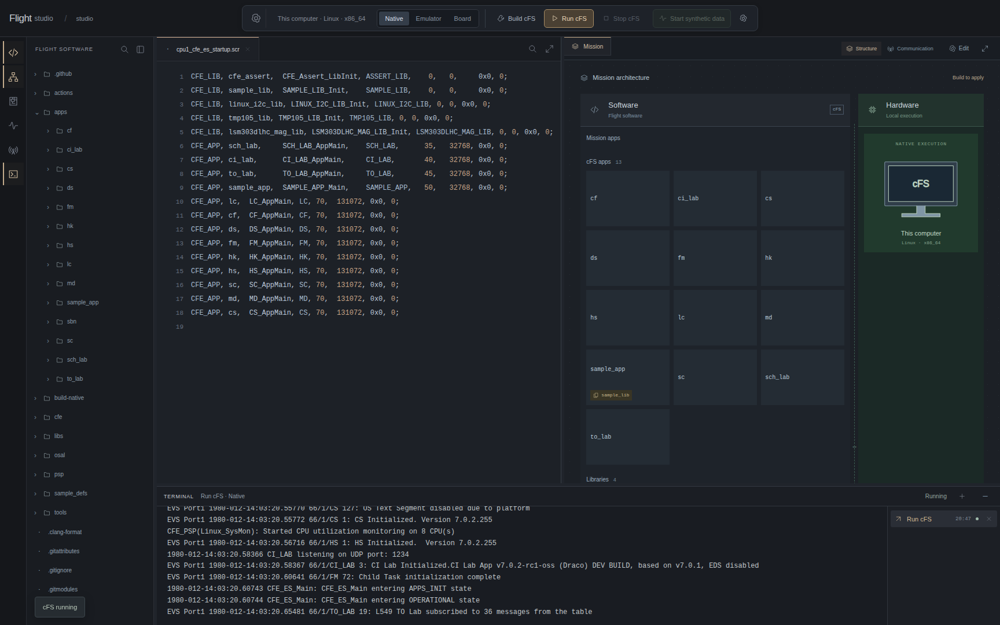
Ejecución nativa real: el terminal registra CFE_ES_Main entering OPERATIONAL state, CI_LAB en UDP 1234 y suscripciones de TO_LAB.
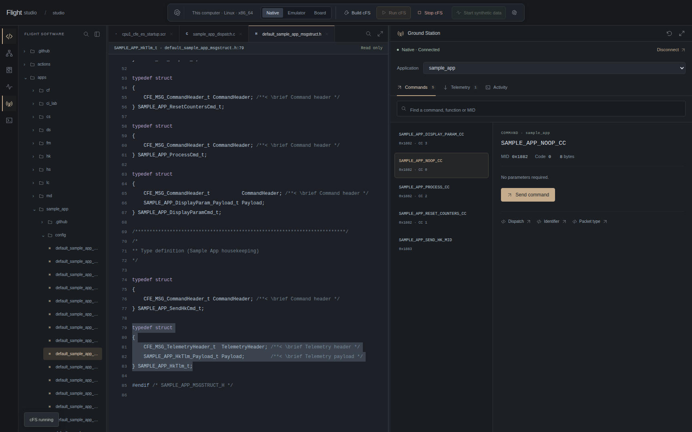
La Ground Station real conectada al cFS nativo. SAMPLE_APP_NOOP_CC utiliza MID 0x1882, código de comando 0 y un paquete de 8 bytes, sin parámetros.
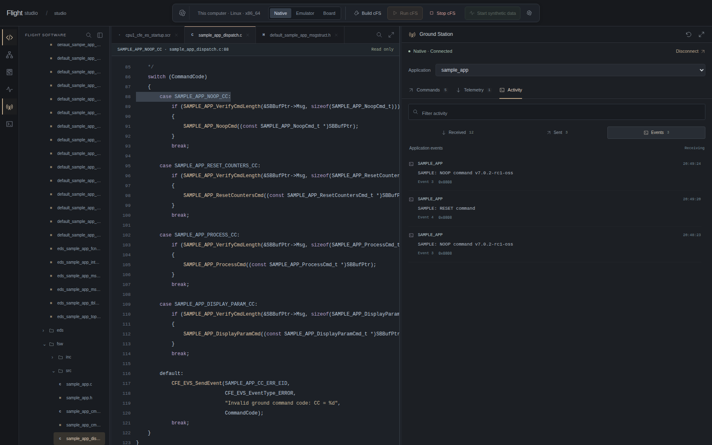
Tras el envío real del NOOP, el panel de actividad recibe el evento SAMPLE: NOOP command v7.0.2-rc1-oss de SAMPLE_APP. Sent por sí solo confirma únicamente el envío del datagrama.
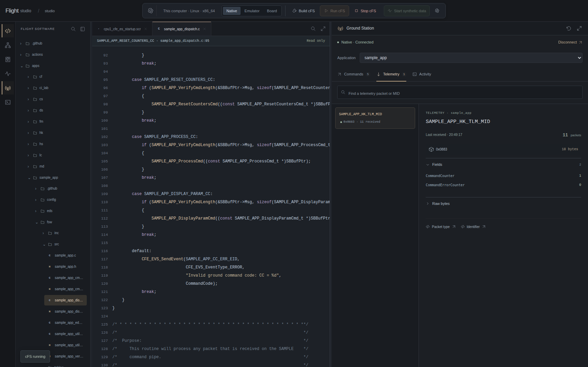
Housekeeping real de SAMPLE_APP, después del comando RESET_COUNTERS y antes del NOOP observado: CommandCounter = 0 y CommandErrorCounter = 0.
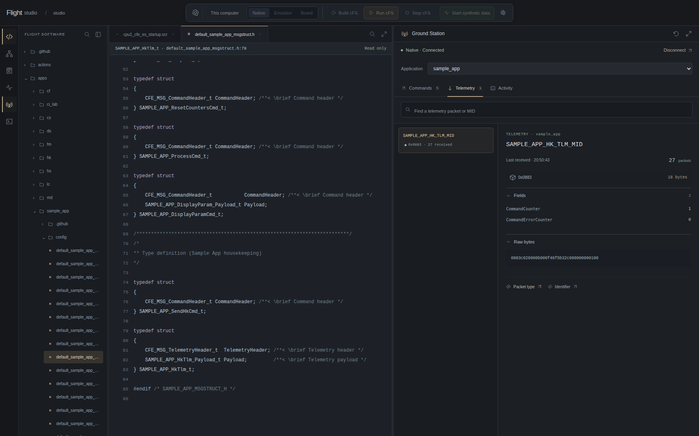
Después del NOOP, la telemetría recibida muestra CommandCounter = 1. El editor abre la estructura C correspondiente; también se pueden inspeccionar los bytes del paquete.
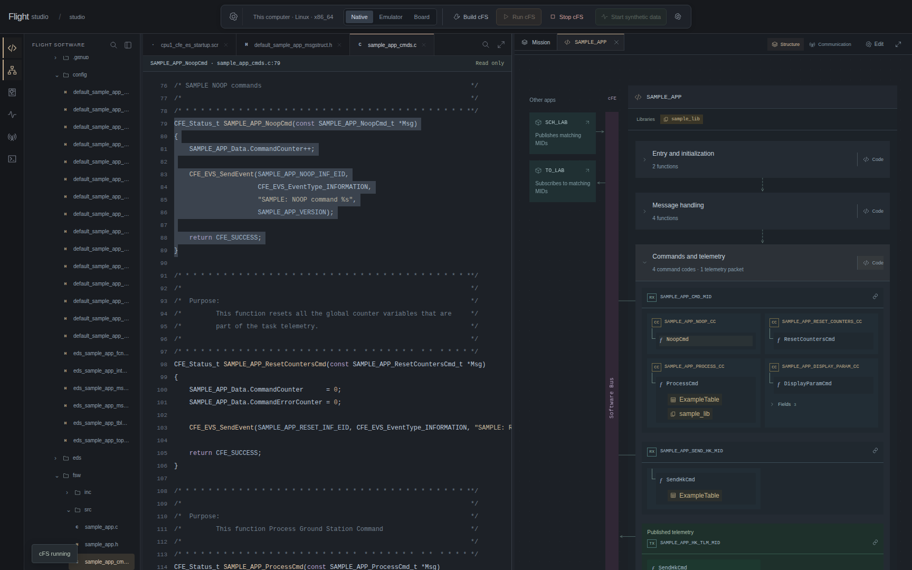
La interfaz en ejecución representa suscripciones al Software Bus, códigos de comando, manejadores y publicación de telemetría a partir del código fuente. Seleccionar un manejador abre su implementación.
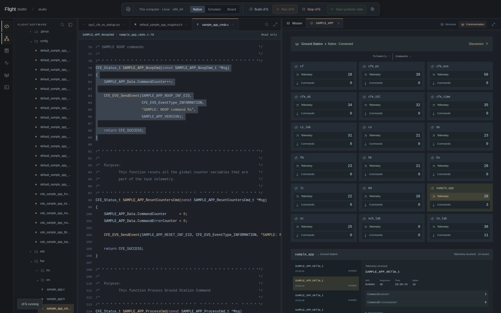
La vista Communication cuenta los comandos enviados y la telemetría recibida por la estación; seleccionar una aplicación permite inspeccionar los paquetes recientes. No representa todos los mensajes internos del Software Bus.
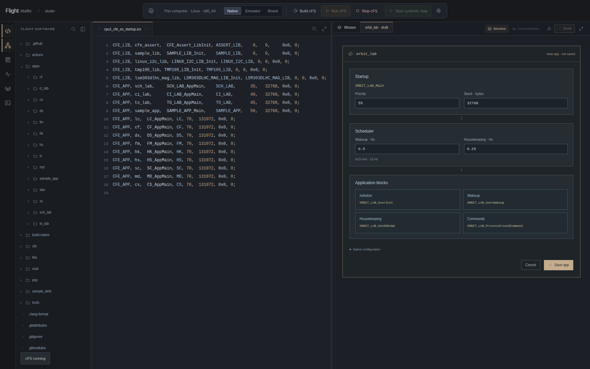
Vista previa real de la creación de orbit_lab, preparada solo en la copia aislada para esta demostración. El generador muestra parámetros, rutas y archivos antes de guardarlos. Esta captura documenta únicamente la vista previa.
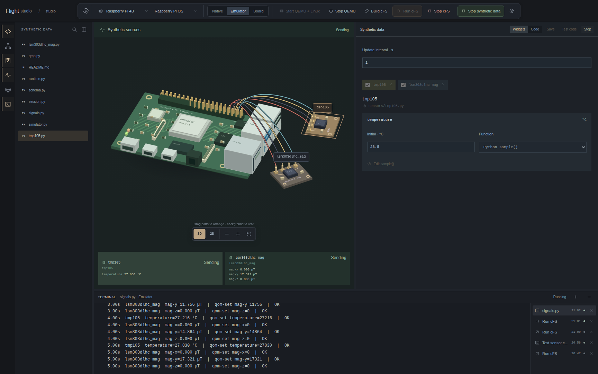
Ejecución real de datos sintéticos con Raspberry Pi 4B, TMP105 y magnetómetro: los valores se envían por QMP y se confirman con OK en el terminal. La pantalla muestra 27,830 °C y un campo magnético en el eje Y de 17,321 µT. Esta misión no incluye una aplicación de lectura de sensores; la captura confirma la aceptación por QMP, no el recorrido del sensor hasta la telemetría.
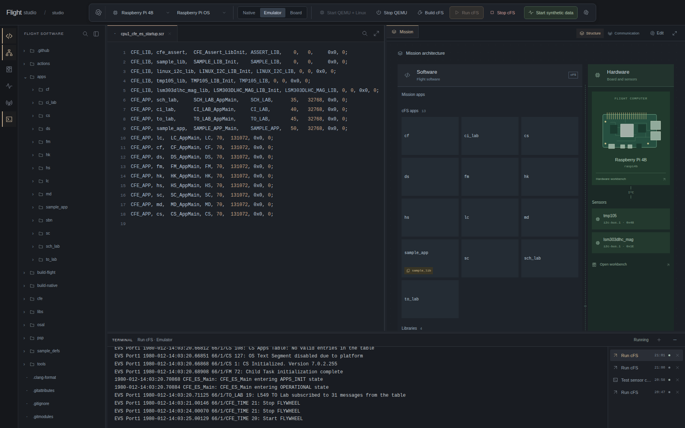
Interfaz y terminal reales durante la ejecución de cFS en el Linux ARM64 invitado de la Raspberry Pi 4B emulada por QEMU. El registro cFE confirma el estado OPERATIONAL.
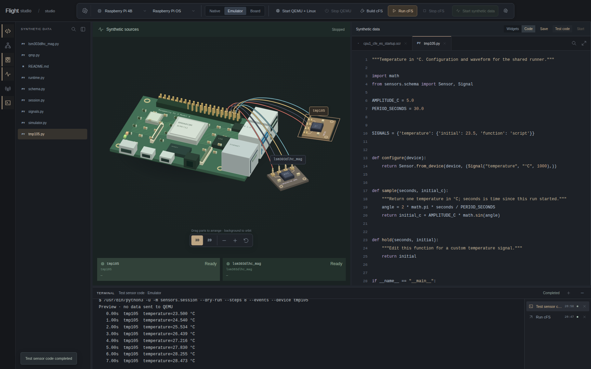
Vista real de datos sintéticos con la función Python del sensor y muestras del modo de prueba. El modo de prueba no envía valores a QEMU.
Dentro del sistema
La interfaz web describe una operación. Un servicio Python la conecta con el proceso cFS en ejecución. Los comandos llegan al software de vuelo; la telemetría devuelve el estado de las aplicaciones. Selecciona un componente para conocer su función.
BROWSER / HTTP
Comandos, telemetría, planificación de misión y vista de arquitectura comparten una interfaz. El estudiante relaciona una operación de bajo nivel con el propósito de la misión.
PYTHON / API
Python conecta editor, generación de aplicaciones, análisis de código y Ground Station. Envía comandos y decodifica telemetría con el catálogo del build. El navegador usa JSON sobre HTTP y consulta tareas y estación cada 1,5 s.
cFS / UDP
Las aplicaciones cFS y los servicios cFE se ejecutan en Linux. Las capturas abarcan el host nativo y Linux ARM64 dentro de QEMU. CI_LAB recibe comandos y TO_LAB devuelve telemetría por UDP; se conserva el sistema de build cFS.
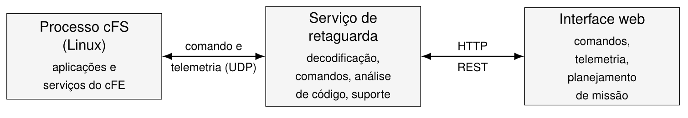
Tres componentes, un flujo conectado
Dentro del sistema
Las aplicaciones usan servicios de vuelo compartidos. La portabilidad nace de separarlos del sistema operativo y la plataforma. Abre cada capa para ver qué cambia y qué se puede reutilizar.
Lógica de misión y aplicaciones reutilizables: entrada de comandos, salida de telemetría, planificación, housekeeping y monitorización. El TCC presenta CI_LAB, TO_LAB, SCH_LAB, HK y HS, entre otras.
Executive Services gestiona aplicaciones; Software Bus distribuye mensajes; Event Services informa eventos; Table Services gestiona tablas; Time Services proporciona la referencia temporal.
Operating System Abstraction Layer expone funciones del sistema operativo mediante una API común y reduce la dependencia del código de un sistema concreto.
Platform Support Package reúne el soporte específico de plataforma que necesita cFE. Esta ejecución usó Linux en el host y en una Raspberry Pi emulada. La evaluación en una placa física de bajo costo sigue como objetivo del TCC.
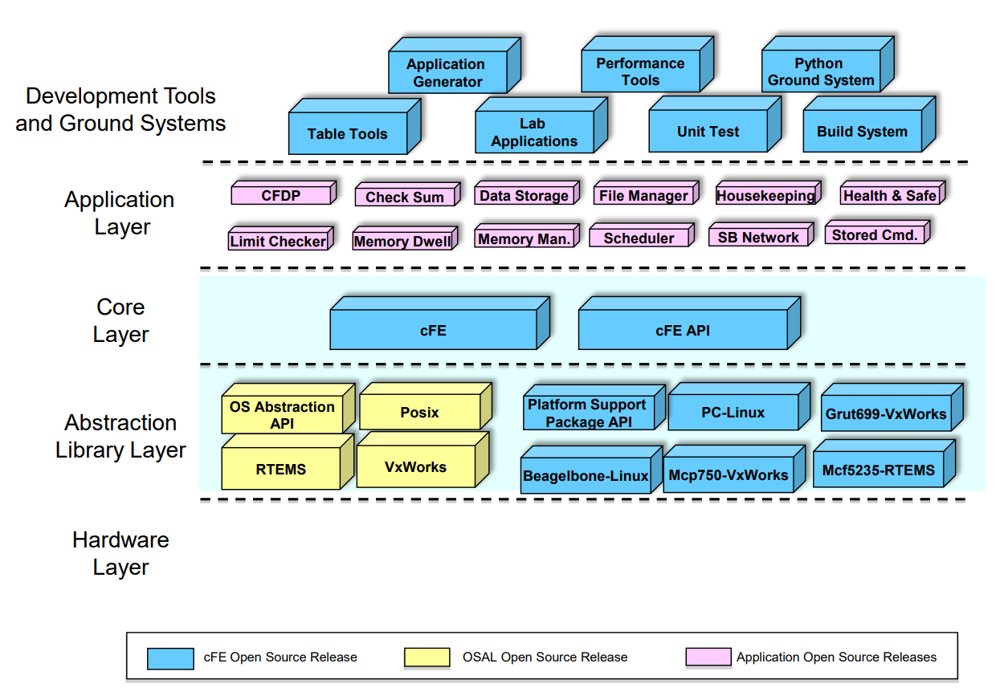
Figura original conservada del TCC, atribuida allí a una adaptación de McComas, Strege y Wilmot (2015). Separa aplicaciones, servicios cFE, abstracción del sistema y soporte de plataforma.
Dentro del sistema
Este recorrido sigue el comando NOOP observado en la ejecución local. El navegador lo solicitó, Python envió el paquete y SAMPLE_APP produjo un evento y actualizó la telemetría. Avanza para ver la evidencia en cada interfaz.
CCSDS / CFE · Ejecución grabada
Estos bytes se capturaron en la ejecución local. Selecciona un campo para inspeccionar su función y compara el housekeeping antes y después del NOOP. El byte 16 pasa de 00 a 01.
Identificador del mensaje. El comando usa 0x1882; el housekeeping usa 0x0883 en esta aplicación capturada.
Indicadores de secuencia y contador en la cabecera.
El campo de longitud es 0001 para este comando de ocho bytes y 000B para el housekeeping de dieciocho bytes.
El código 0 selecciona SAMPLE_APP_NOOP_CC. Este comando no necesita parámetros en la carga útil.
El checksum del comando capturado es A4. El XOR de sus ocho bytes es FF.
Identificador del mensaje. El comando usa 0x1882; el housekeeping usa 0x0883 en esta aplicación capturada.
Indicadores de secuencia y contador en la cabecera.
El campo de longitud es 0001 para este comando de ocho bytes y 000B para el housekeeping de dieciocho bytes.
Bytes de la cabecera secundaria de telemetría, preservados como se capturaron.
CommandCounter en el byte 16 pasó de 0 a 1 después de NOOP. Es la observación a nivel de aplicación.
CommandErrorCounter en el byte 17 se mantuvo en 0 en el paquete observado.
Identificador del mensaje. El comando usa 0x1882; el housekeeping usa 0x0883 en esta aplicación capturada.
Indicadores de secuencia y contador en la cabecera.
El campo de longitud es 0001 para este comando de ocho bytes y 000B para el housekeeping de dieciocho bytes.
Bytes de la cabecera secundaria de telemetría, preservados como se capturaron.
CommandCounter en el byte 16 pasó de 0 a 1 después de NOOP. Es la observación a nivel de aplicación.
CommandErrorCounter en el byte 17 se mantuvo en 0 en el paquete observado.
Dentro del sistema
Flight Studio reúne el ciclo de desarrollo: crear una aplicación, inspeccionar relaciones extraídas del C, compilar para el destino elegido y examinar comandos y telemetría.
01
El generador muestra los archivos y la integración al build antes de escribirlos. El ejemplo orbit_lab capturado muestra esa vista previa; no se creó una app para las capturas.
02
La vista de arquitectura extrae del C las relaciones entre funciones y comandos. Ground Station usa el compilador del build para obtener identificadores, tamaños y offsets, conectando el editor con los paquetes enviados.
03
Eventos, campos decodificados y bytes originales aparecen juntos. El estudiante puede relacionar SAMPLE_APP_NoopCmd con su evento y el contador, y volver al código que los produjo.
Dentro del sistema
La misión cFS también se ejecutó en Linux ARM64 de la Raspberry Pi emulada. Python genera valores físicos; QMP los inyecta en el sensor emulado. Explora la función de temperatura y su recorrido hacia una aplicación.
El repositorio define temperatura inicial de 23,5 °C, amplitud de 5 °C y período de 30 s. Recorre un período para ver cómo el tiempo se convierte en valor del sensor.
23.5 + 5 × sin(2π × t / 30)Exploración matemática de sample(). Este control actualiza el diagrama localmente.
sample(seconds, initial_c) produce una temperatura en grados Celsius. El simulador multiplica por 1000 y redondea a los miligrados enteros esperados por QEMU.
qom-set escribe la propiedad temperature del TMP105 por el socket Unix QMP. Un objeto de retorno vacío se muestra como OK. Esta es la etapa verificada por la captura de sensores.
En Linux, el controlador accede al TMP105 en la dirección I²C 0x48 del bus 1. linux_i2c_lib ofrece acceso al bus y tmp105_lib interpreta los registros. Ambas bibliotecas se cargaron en la misión cFS capturada.
Una aplicación debe leer la biblioteca, publicar en Software Bus e incluir el mensaje en la ruta de telemetría. La misión capturada no tenía una app lectora: este último recorrido se explica desde la arquitectura y no se presenta como una prueba observada de extremo a extremo.
def configure(device): return Sensor.from_device(device, (Signal("temperature", "°C", 1000),)) def sample(seconds, initial_c): """Return one temperature in °C; seconds is time since this run started.""" angle = 2 * math.pi * seconds / PERIOD_SECONDS return initial_c + AMPLITUDE_C * math.sin(angle)Dentro del sistema
La planificación conecta el objetivo de misión con las aplicaciones, sus comandos y la telemetría que permite observar el resultado. El dibujo ilustra esta relación propuesta en el TCC.
Dentro del sistema
El TCC define una evaluación técnica y otra educativa. Los valores siguientes son criterios que se deben probar, no mediciones publicadas. Cada criterio requiere instrumentación o un estudio con usuarios.
Desde la petición a la aplicación compilada e integrada; media de ejecuciones repetidas.
Recepción UDP → visualización en la interfaz web de escritorio.
Repetir mediciones técnicas y verificar funcionamiento y respuesta.
System Usability Scale después de la tarea; umbral propuesto en el TCC.
Comparar los flujos convencional y asistido: tiempo, errores de compilación y consultas a documentación.
Cuestionario antes y después de la tarea y proporción de participantes que la completan.
Dentro del sistema
Documentado en la propuesta
Documentado en la propuesta
Documentado en la propuesta
Implementado en el repositorio
Desarrollo previsto
Lo que demuestra este trabajo
cFS nativo alcanzó OPERATIONAL. Un comando enviado desde Flight Studio produjo un evento NOOP e incrementó el contador de comandos en telemetría. El TCC define la siguiente evaluación: cuantificar esfuerzo, latencia y usabilidad con mediciones repetibles y usuarios.
Arquitectura y contexto de evaluación: TCC 1 entregado. Implementación y capturas: repositorio cfs_emulator ejecutado localmente. Las metas técnicas y educativas siguen siendo criterios de evaluación, no resultados de benchmark de esta sesión.
COMMIT f9b21e76e049 · cFS / NATIVE / QEMU ARM64
GitHub · Flight Studio ↗interface/static/app.js ↗ground_station/catalog.py ↗interface/backend/architecture_details.py ↗Proyectos
Pasa el cursor o usa el teclado
UFSM · Santa Maria, Brazil · 2020
Un kit educativo de minicohete de bajo coste para llevar actividades aeroespaciales prácticas a escuelas públicas.
AbrirCarancho Aerodesign · UFSM · 2020–2022
En Carancho Aerodesign, lideré el bloque estructural de tres departamentos: análisis estructural, cargas y aeroelasticidad, y CAD.
AbrirUFSM · 2021
Un juego de damas espaciales en C y Allegro 5. Creado en 2021, restaurado en 2026 y jugable aquí con el mismo motor C.
AbrirIndependent project · 2021
Guías interactivas para explorar mecánica de sólidos mediante código y gráficos.
AbrirWebservatório · UFSM · 2021–2022
Coordinación estudiantil de Webservatório, proyecto de divulgación astronómica que conecta al público con expertos mediante observaciones y debates online.
AbrirUFSM · Santa Maria, Brazil · 2022–2024
Ayudé a crear la Escola Piloto de Engenharia Aeroespacial en la UFSM, conectando estudiantes, profesionales y escuelas públicas mediante el aprendizaje práctico.
AbrirUFSM · 2023
Una herramienta en Python construida a lo largo de tres trabajos para analizar un ala, desde las cargas de vuelo hasta la flexión, torsión y pandeo.
AbrirGrenoble INP – Phelma · 2023–2024
Un kernel de bajo nivel para explorar la interacción entre hardware, interrupciones y procesos.
AbrirGrenoble INP – Phelma · 2023–2024
Modelado de cadenas de transmisión de radio y filtros para dispositivos conectados.
AbrirGrenoble INP – Phelma · 2023–2024
Proyecto de ingeniería de software con seis integrantes para crear un compilador Java para un subconjunto de un lenguaje.
AbrirGrenoble INP – Phelma · 2023–2024
Un corrector ortográfico que compara estructuras de datos para búsquedas rápidas y uso eficiente de memoria.
AbrirGrenoble INP – Phelma · 2023–2024
Componentes digitales VHDL, desde un banco de memoria con registros hasta la detección de paquetes Ethernet.
AbrirGrenoble INP – Phelma · 2024
Software embebido en tiempo real para un prototipo físico de CubeSat que orienta sus paneles solares hacia la luz.
AbrirGrenoble INP – Phelma · 2024
Simulación de fallos de un bit en un multiplicador secuencial VHDL, comparando inyección TCL con un saboteur de hardware y siguiendo la propagación del error hasta la salida.
AbrirGrenoble INP – Phelma · 2024
Un filtro de imagen en SoC que conecta modelos de alto nivel con el diseño de hardware.
AbrirGrenoble INP – Phelma · 2024
Especificación, implementación y validación de un filtro digital en VHDL.
AbrirGrenoble INP – Phelma · 2024
Modelado y simulación de control en tiempo real de una suspensión magnética alrededor del equilibrio.
AbrirGrenoble INP – Phelma · 2024
Simulación MATLAB de una cadena de transmisión digital 2-PAM con filtros analógicos y digitales.
AbrirGrenoble INP – Phelma · 2024
Proyecto de emprendimiento en equipo de seis: una aplicación para compartir experiencias e iniciar actividades.
AbrirGrenoble INP – Phelma · 2024–2025
Validación por instrucción de una extensión experimental del CVA6 a 128 bits: simulación, automatización y depuración de accesos a memoria en casos de 32, 64 y 128 bits.
AbrirGrenoble INP – Phelma · 2024–2025
Un vehículo autónomo seguidor de pista que integra realimentación de velocidad de las ruedas, dirección y una cámara lineal de 128 píxeles en un controlador embebido.
AbrirUFSM · Engenharia Aeroespacial · 2025–2026
Un entorno web para desarrollar y comprender software de vuelo NASA cFS: código, arquitectura de aplicaciones, comandos, telemetría y una Raspberry Pi emulada.
Estás aquí